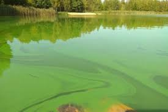
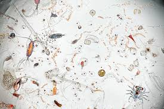

НАУКОВИЙ ПРОЄКТ
Цвітіння води
Що це за явище?
Масове розмноження ціанобактерій (синьо-зелених водоростей) — це складна екологічна криза. Ці мікроорганізми існують мільярди років, але за певних умов їх чисельність зростає вибухоподібно. Коли температура води перевищує 20°C, а рівень поживних речовин стає занадто високим, починається процес, який перетворює прозору воду на густу "зелену кашу", що простягається на кілометри вздовж русла.
Щільна плівка на поверхні діє як сонячний екран. Вона повністю блокує доступ світла до глибинних шарів, через що підводні рослини втрачають можливість фотосинтезувати. Це запускає ланцюгову реакцію: замість того, щоб виробляти кисень, підводна флора починає масово вмирати. Бактерії, що розкладають ці рештки, споживають останні запаси розчиненого кисню, створюючи "мертві зони", де не може вижити жодна риба.
Найстрашніше відбувається вночі: самі бактерії починають активно поглинати залишки кисню для дихання. Це призводить до явища "замору" — масової загибелі риб, молюсків та ракоподібних, які буквально задихаються у власній домівці.

Чому це відбувається?
Цвітіння не є випадковістю — це результат глибокого порушення біологічного балансу, спричиненого діяльністю людини. Головним паливом для цього процесу є евтрофікація: критичне перенасичення води сполуками азоту та фосфору.
Побутова хімія
Більшість пральних порошків містять фосфати, які не затримуються очисними спорудами.
Очисні станції більшості міст були спроектовані десятки років тому і не розраховані на фільтрацію розчинених хімікатів. Кожен грам фосфатів стає початком ланцюгової реакції, провокуючи ріст 10-15 кг водоростей. Фосфор — це ідеальне добриво, яке потрапляє в каналізацію, а звідти безпосередньо у відкриті водойми, де стає основою раціону для синьо-зелених водоростей.
Сільське господарство
Надлишок мінеральних добрив змивається з полів під час дощів і стікає в річки.
Сучасне агровиробництво використовує величезну кількість нітратів та азотних добрив для підвищення врожайності. Коли йдуть зливи або тане сніг, родючий шар ґрунту разом із залишками хімії змивається безпосередньо у прилеглі водойми. Цей постійний "потік поживних речовин" створює ідеальне середовище для ціанобактерій, дозволяючи їм розмножуватися з неймовірною швидкістю.
Глобальне потепління
Висока температура води та слабка течія створюють ефект інкубатора.
Через будівництво великої кількості дамб, гребель та водосховищ природна швидкість течії річок впала в десятки разів. Вода застоюється і прогрівається значно швидше та глибше. Чим тепліша вода, тим менше в ній кисню і тим комфортніше в ній почуваються бактерії. Спекотне літо без вітру перетворює наші річки на величезні закриті басейни, де процес цвітіння стає незворотним.

Приховані загрози
Крім візуального забруднення, ціанобактерії виробляють небезпечні мікроцистини. Ці біологічні токсини є одними з найсильніших у природі. Вони вражають шкіру, викликаючи алергічні реакції, при потраплянні всередину організму пошкоджують печінку та можуть негативно впливати на центральну нервову систему людини та тварин.
У процесі гниття величезної маси водоростей у воду виділяються аміак, метан та сірководень. Ці гази мають різкий неприємний запах, який чутно на сотні метрів від берега, і роблять воду абсолютно непридатною не тільки для пиття, але й для технічних потреб або купання.
Найбільша небезпека полягає в тому, що ці токсини надзвичайно стійкі. Звичайне кип'ятіння в домашніх умовах лише вбиває самі бактерії, але ніяк не впливає на їхні отруйні виділення. Хімічні сполуки залишаються у воді навіть після термічної обробки, що робить таку воду небезпечною для здоров'я навіть після фільтрації.
Питання 1/6
Хто є головним "винуватцем" цвітіння води?
Питання 2/6
Що створюють водорості на поверхні, блокуючи сонце?
Питання 3/6
Яка речовина з порошків є "супер-їжею" для бактерій?
Питання 4/6
Чому кип'ятіння не рятує "цвілу" воду?
Питання 5/6
Що відбувається з рибою, коли водорості гниють?
Питання 6/6
Який напис на упаковці побутової хімії допоможе річкам?